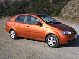
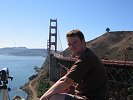
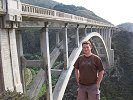
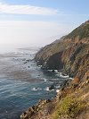
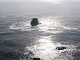

|
|
|
lornaland.co.uk Holidays Photo Gallery Lornaland Natter USA 2005 Journal Menu...New YorkBoston Cooperstown Buffalo Las Vegas Death Valley Yosemite National Park San Francisco San Simeon Los Angeles San Diego Southern California Pictures |
San Simeon25th September 2005Sunday 25th September 2005 Today we left San Francisco. First stop was to pick up our third and final car - Arnie Spovo, a Chevrolet Aveo. With the car all loaded, we set off to the Golden Gate Bridge, our first chance to cross it. We pulled into the lookout point on the other side for a view of the bridge and San Francisco's skyline. After photos, we headed back across the bridge to Lombard Street to drive down it. I thought it was fun but Dan was a little disappointed. We headed out of San Francisco and onto the open road - Highway 1, the Big Sur coastline and according to some, the most scenic road in the world.  We stopped at various points along the way to check out the view and made a quick stop in Carmel, where Clint Eastwood was once mayor. It was a quaint little town full of posh boutiques so we popped into a deli for lunch then left. Tonight's destination was San Simeon, a small town on the big sur coastline created mainly to serve nearby Hearst Castle.  Our home for the evening was the Silver Surf Motel which had cost us the grand total of $43.95 for the night (approx £25!) There was a little delay with check-in due to them not being able to find our reservation but when we finally got to our room, we were very impressed. It was probably the nicest room we'd had so far (not counting the Bellagio of course)  There was time for a dip in the pool and a soak in the jacuzzi before dinner. There wasn't a huge choice for dinner but we made a good choice with the Cavalier Best Western. A very tasty and cheap meal. The only downside was when they started to close around us and we still had a third of a bottle of wine left! After a little stroll along the shore, we headed to be ready for an early start tomorrow. |